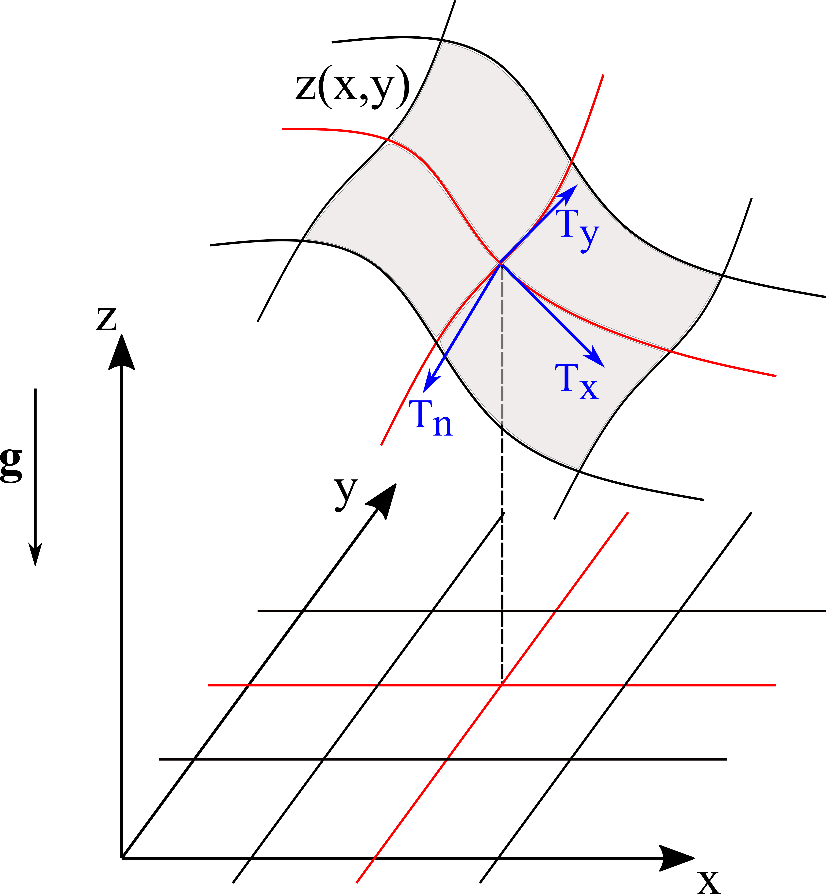

Mass Point Model
Theory of mass point model
A mass point model is an extremely simplified model to simulate mass movement on a given topography. It assumes that the flow mass is condensed to a single point.
Let \(Z(x,y)\) define a topography in a Cartesian coordinate system \(\{x, y, z\}\). It induces a local non-orthogonal coordinate system \(\{T_x, T_y, T_n\}\), where \(T_x\) and \(T_y\) denote surface tangent directions and \(T_n\) denote surface normal direction \(T_n\), as shown by the following figure [Zhao, 2021]
{kind=link}
The govening equations describing the movement of a masspoint on the surface are given by
where \(\mu\) and \(\xi\) are dry-Coulomb and turbulent friction coefficient respectively (Voellmy friction model is used here). \(\mathbf{K}\) is the curvature tensor [Fischer et al., 2012]. \(\mathbf{U}\) represents the masspoint’s velocity. \(U_{T_x}\) and \(U_{T_y}\) are the velocity components along \(T_x\) and \(T_y\) direction respectively.
Equations (1) to (4) can be rewritten in the vector format as
Equation (5) defines an initial value problem. Given initial
\(\boldsymbol{\alpha}_0\), the system can be solved forward in time using
numerical schemes such as the runge-kutta method. Class MassPointModel
utilizes the explicit runge-kutta method dopri5 provided by
scipy.integrate.ode.
MassPointModel Class
The MassPointModel class is imported by:
from psimpy.simulator.mass_point_model import MassPointModel
Methods
- class MassPointModel[source]
Simulate the movement of a masspoint on a topography.
- run(elevation, coulomb_friction, turbulent_friction, x0, y0, ux0=0, uy0=0, dt=1, tend=300, t0=0, g=9.8, atol=1e-06, rtol=1e-06, curvature=False)[source]
Solve the mass point model using
scipy.integrate.odesolver given required input data.- Parameters:
elevation (str) – Name of the elevation raster file, in ESRI ascii format, including the path.
coulomb_friction (float) – Dry Coulomb friction coefficient.
turbulent_friction (float or int) – Turbulent friction coefficient, in \(m/s^2\).
x0 (float or int) – x coordinate of initial position.
y0 (float or int) – y coordinate of initial position.
ux0 (float or int) – Initial velocity in x direction.
uy0 (float or int) – Initial velocity in y direction.
dt (float or int) – Time step in seconds.
tend (float or int) – End time in seconds.
t0 (float or int) – Initial time.
g (float or int) – Gravity acceleration, in \(m/s^2\).
atol (float) – Absolute tolerance for solution.
rtol (float) – Relative tolerance for solution.
curvature (bool) – If True, take the curvature effect into account.
- Returns:
output – Time history of the mass point’s location and velocity. 2d
numpy.ndarray. Each row corresponds to a time step and each column corresponds to a quantity. In total \(6\) columns, namelyoutput.shape[1]=6. More specifically:output[:,0]are the time steps,output[:,1]are the x coordinates,output[:,2]are the y coordinates,output[:,3]are velocity values in x direction,output[:,4]are velocity values in y direction,output[:,5]are total velocity values.- Return type:
numpy array